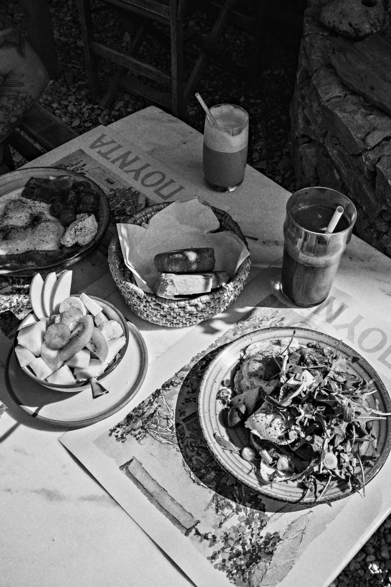
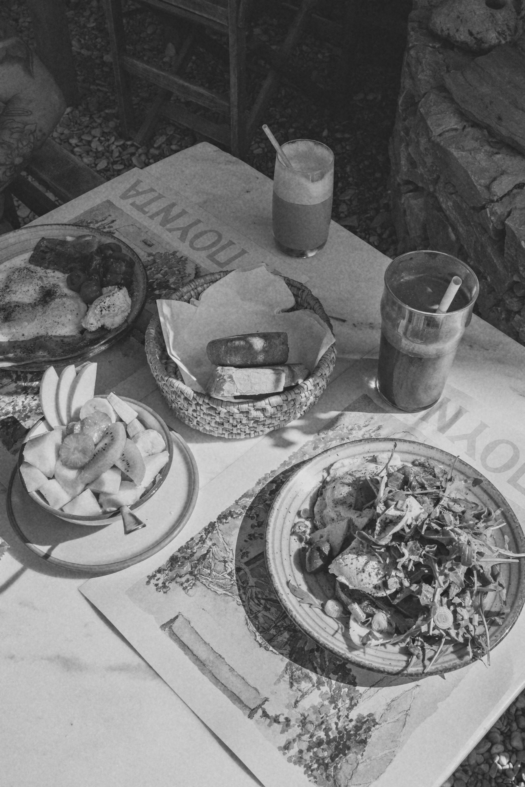

Low contrast, airy highlights. Kind to faces and window light.
ISO 50 ▸ 36 EXPAuto develop · for iPhone
One shot.
Two photos.
Shoot in color with your iPhone Camera. Automono adds a black and white print beside it.
Color
Noir 400
No new camera to learn.
AUTO DEVELOP ● ON
Process3 STEPS
Expose. Develop. Print.
01
Expose
Take pictures with the built-in Camera, exactly as you do today. Portrait, ProRAW, Live Photos: all welcome.
02
Develop
Automono picks up each new photo and develops it from the best data your iPhone saved, RAW included.
03
Print
The black & white print is filed beside your untouched color original, with the same date and place.
Film stocks4 IN THE BOX
Choose your stock.
Four looks, each named for its character and rated like film: the faster the speed, the more the grain.
A subtle warm tone, like a fiber print fresh from the wash.
ISO 100 ▸ 36 EXPFine grain and the full tonal range. The everyday stock.
ISO 125 ▸ 36 EXPRed-filter contrast: deep blacks, dark skies, glowing skin.
ISO 400 ▸ 36 EXPIn the darkroomTECHNICAL DATA
Developed from RAW
When you shoot ProRAW, Automono develops from the RAW file itself. Otherwise it uses the full-resolution original, never a preview.
Full-res, 10-bit
Every print is a full-resolution 10-bit HEIC, so skies and skin stay smooth with no banding.
Same time, same place
Prints keep the original's date, location and camera details, so they sit right next to it in your library.
Originals untouched
Automono only ever adds. It never edits or deletes a photo, and leaves screenshots and saved images alone.
Auto-develop in the background1 MINUTE · ONCE
Set it up once.
A single Shortcuts automation wakes Automono whenever you close the Camera, so your prints appear within seconds, without opening the app.
It's optional. Automono shows you exactly what to tap and ticks the box once it's working. Prefer to stay in control? Open Automono and tap the developing tank whenever you want your prints.
When Camera is Closed
Convert New Photos to Black & White
Privacy
Data not collected.
Everything happens on your iPhone. No account, no uploads, no analytics, no ads. Your photos never leave your phone.
QuestionsFAQ
Do I need to use a different camera?
No. Keep using the iPhone's built-in Camera app. Automono works in the background and adds the black & white prints for you.
Will it convert my whole library?
No. Automono only develops photos taken after you install it, and skips screenshots and images saved from other apps.
Does it change my original photos?
Never. Your color originals stay exactly as they are; Automono only adds new black & white copies.
Why is there a Shortcuts step?
iPhone doesn't let apps run in the background all the time, and only you can create automations. The one-time automation lets iOS wake Automono whenever you close the Camera.
What do I need?
An iPhone running iOS 17 or later. ProRAW is used automatically on iPhones that support it, when you shoot in ProRAW.
Contact sheetROLL 01

